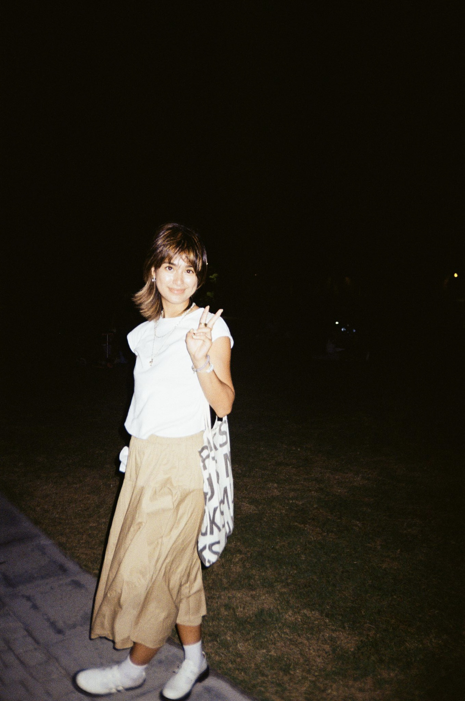

MIKAYLA_MAYUMI_ROGERS.PNG

HELLO/KAMUSTA PO!
I’m a Filipino-American web developer based between New York, Philadelphia, Amsterdam, and Manila.
I build and design custom websites that are playful yet efficient, while focusing on interactivity and functionality.
Currently, I’m working as a web developer at
CMYK in Brooklyn, NY.
When I'm not glued to my laptop screen, I can often be found playing basketball, drinking matcha, or planning my next travels.
EXPERIENCE:
Mar 2023-Present
- Web Developer at CMYK
Sep 2022-May 2023
- Web Design Teaching Assistant at NYU Courant
Nov 2020-Jul 2021
- Digital Media Assistant at NYU K12 STEM
Feb-Mar 2020
- Design & Marketing Intern at Rachel Comey
EDUCATION:
Sep 2019-May 2023
- B.S. Integrated Design and Media, NYU Tandon School of Engineering
- Minors: Technology, Management and Design (TMD) & Web Programming and Applications
Feb-Jul 2022
- Faculty of Humanities, University of Amsterdam (Exchange)
Sep-Dec 2021
- Department of Computer Science, City University of Hong Kong (Exchange)